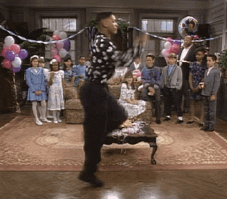

Janne Winther
Jeg er 32 år, bor på Lambertseter med min sønn. Jeg har tidligere gått på Salg og Service studiet og Tegning, form og farge.
Jeg valgte Interaksjonsdesign for min interesse for data og design, ønske av å lære gode interaktive lønsinger og kombinere ferdighet innen tegning.
Gleder meg til å lære om webdesign og applikasjonsdesign.
Trivsel på skolen for meg vil jeg si handler om et godt klassemiljø, og å bli sett.
Hobbyer
Tegning og maling
Kajakk tur med packraft
Håndarbeid

"Vær mot andre slik du vil at andre skal være mot deg"
Favoritt nettsider/Magasiner
Zalando